Network Engineer Intern.
Early-stage startup; owned end-to-end development of the smart-farm prototype across hardware, network, and cloud.
Network
Cloud & ML
Hardware
Other
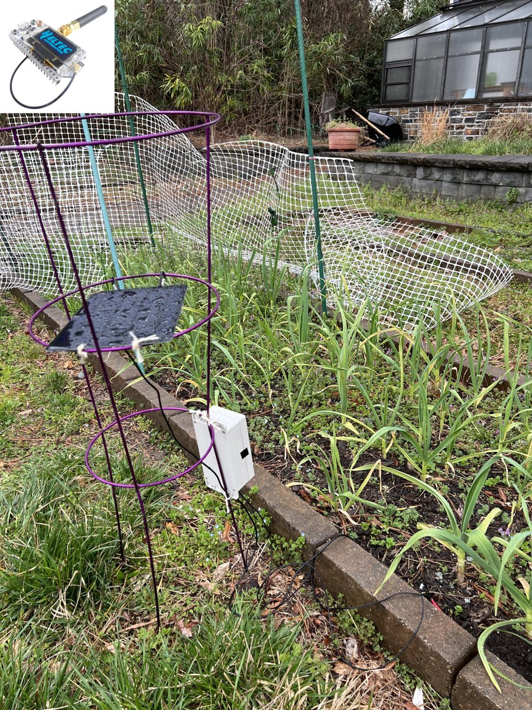
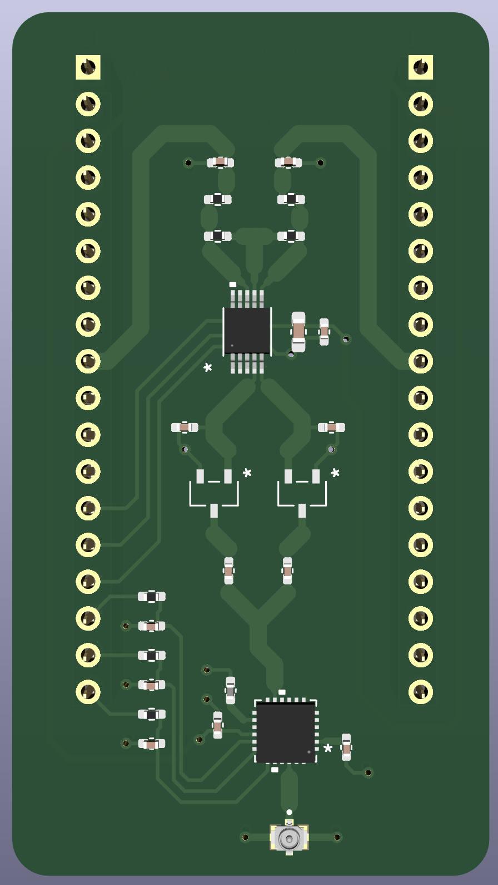
School-Enterprise Joint Cultivation Program.
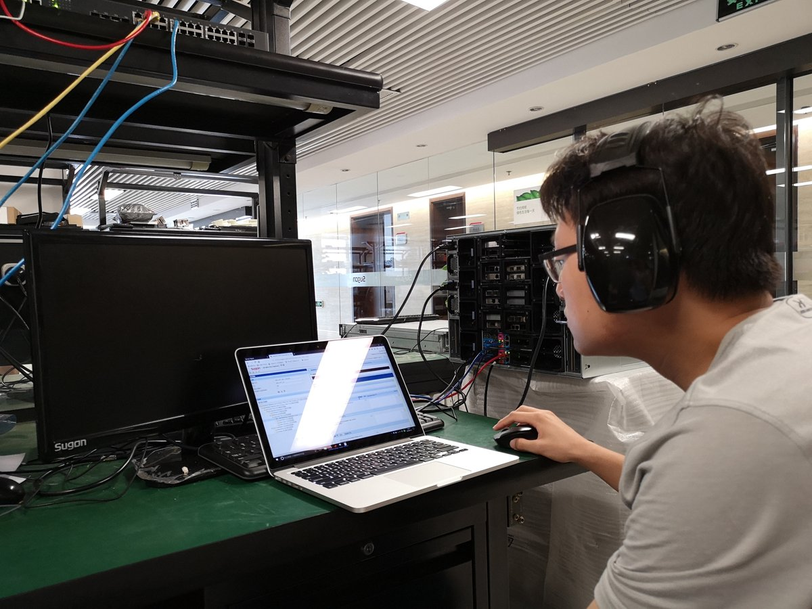
Error-control coding simulations for file transmission and reconstruction.
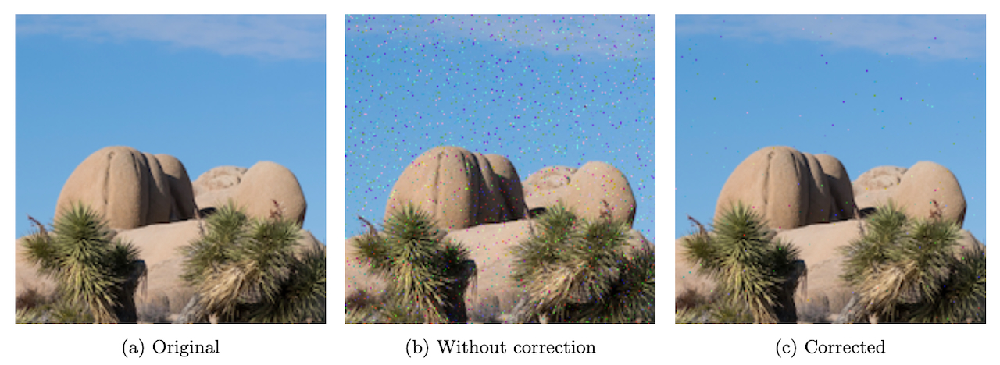
Database-backed stream-processing system with web control and visualization.
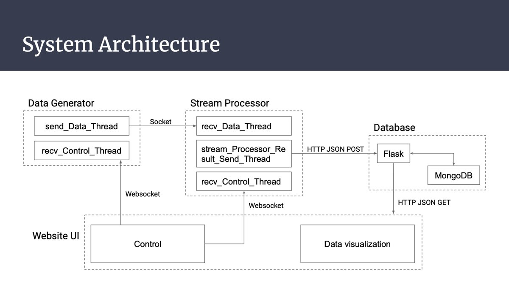
Fast moving-object detection in high-resolution video.
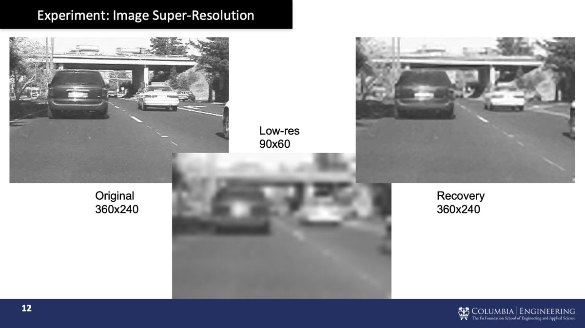
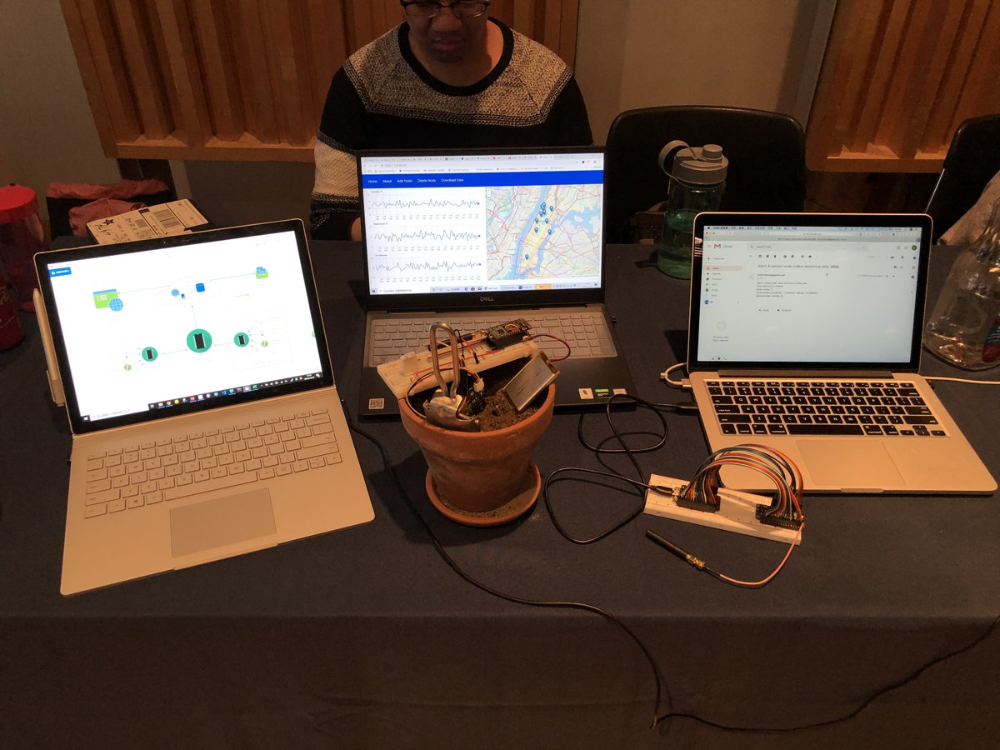
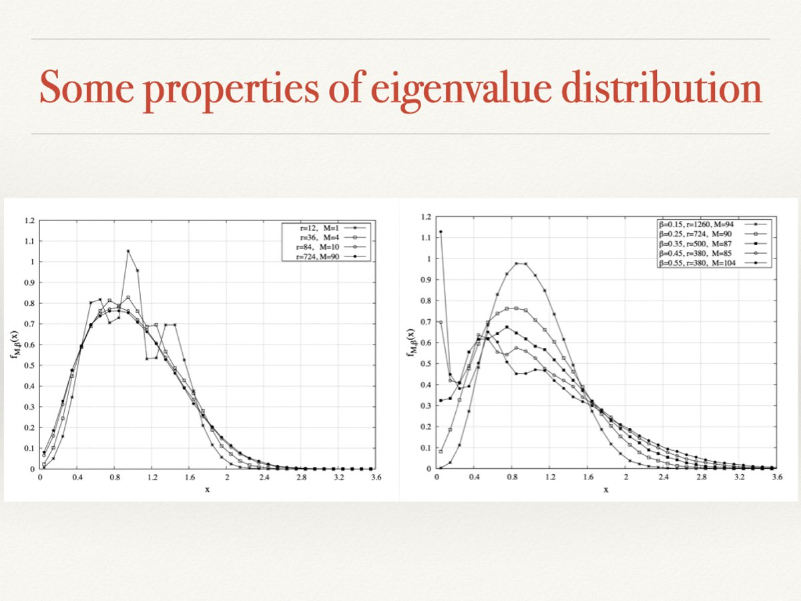
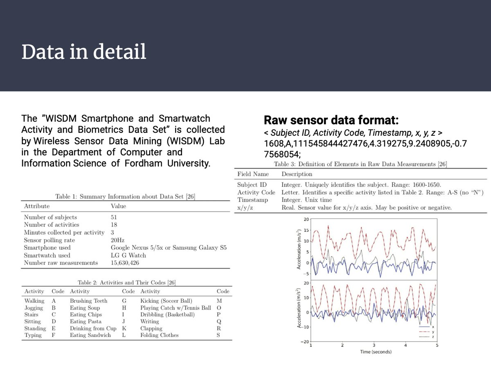
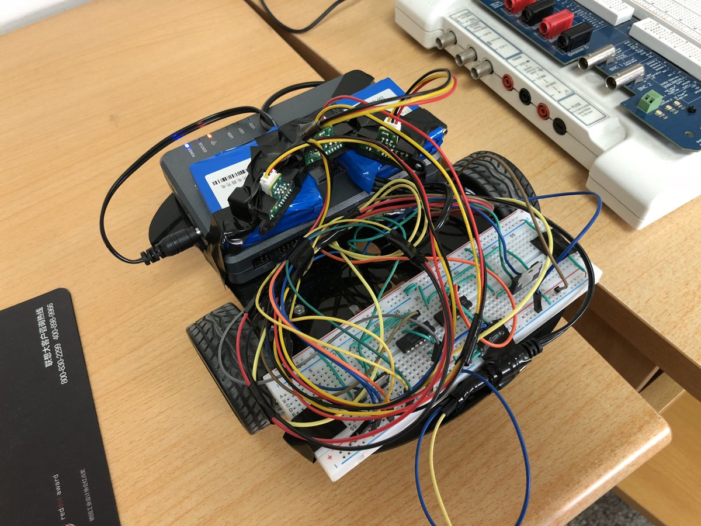
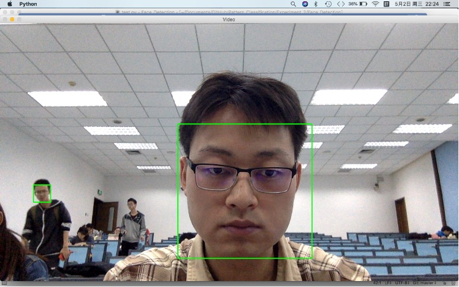
Ph.D. Teaching Assistant / Reader at University of California, Davis
M.S. Teaching Assistant at Columbia University
UC Davis:
| Gold Reviewer Award | The 43rd International Conference on Machine Learning (ICML), 2026 |
Columbia University:
| Best Demo Award | The 19th ACM Conference on Embedded Networked Sensor Systems (SenSys), 2021 |
| Nikola Tesla Scholarship | Columbia University, 2019 |
Xi'an Jiaotong University:
| University Third Scholarship | Xi'an Jiaotong University, 2018 |
| Siyuan Scholarship | Xi'an Jiaotong University, 2017 |
| Outstanding Student | Xi'an Jiaotong University, 2017 |
| Provincial First Prize | China Undergraduate Mathematical Contest in Modeling, 2016 |
| National Second Prize | VEX Robotics China Open, 2016 |